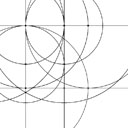

Proportion tutorial: Adding the "base" figure to a page.
The "base figure" is useful for page layout.
Given a page width and height, it constructs a rectangle of that size.
Please look at the source code of this page for more information.